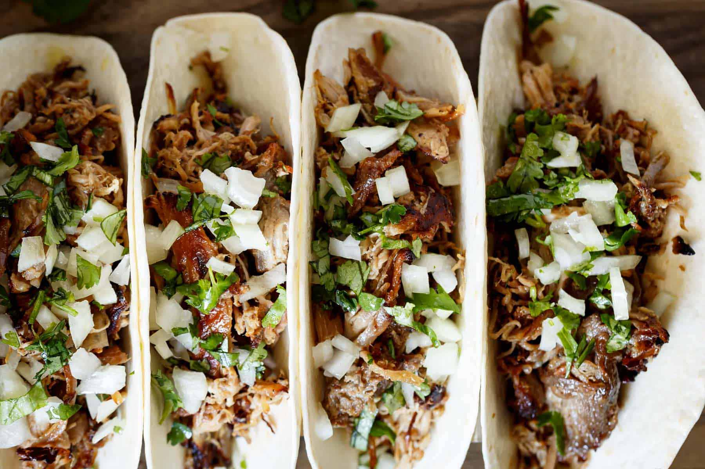

Crispy Pork Carnitas

Description
Crispy Pork Carnitas (Mexican Slow Cooked Pulled Pork) is SO tender and juicy on the inside, while deliciously crisp and golden on the edges! Giving you TWO options to get that perfect crisp finish, and PERFECT for your Cinco De Mayo parties!
Carnitas are so versatile, you can fill any burrito, taco, quesadilla OR use them as a topping for Nachos! Serve them with the typical onion/cilantro topping typically seen served on Mexican food trucks OR a good Guacamole or Pico De Gallo!
Ingredients
- 4 pound skinless pork butt or shoulder
- 3-4 tsp salt
- 1 tsp pepper
- 1 tbsp dried oregano
- 1 large onion cut into wedges
- 8 gloves garlic smashed
- 2 limes, juiced
- 3/4 cup natural orange juice
- 2 bay leaves
Instructions
- Rinse and pat dry pork with a paper towel.
- In the bowl of a 6 quart slow cooker, add pork, salt, pepper, oregano, cumin, onion, garlic, lime juice, orange juice, and bay leaves.
- Cover and cook on low heat setting for 8-10 hours, or high heat for 5-6 hours (until the meat falls apart).
- Remove pork and sgred with two forks. Do not discard the liquid.
To Crisp In The Oven:
- Transfer pork to a baking sheet lightly sprayed with cooking oil spray.
- Pour 1 ladle full (about 1 cup) of the liquid from the slow cooker over the pork to season.
- Broil for 5-10 minutes on high heat until the meat becomes golden browned and crispy on the edges
To Serve:
- Season with extra salt and pepper is desired. Pour more slow cooker juices over pork once it has crisped for added flavor.
- Serve in tacos, burritos, or in a salad!
Back Home